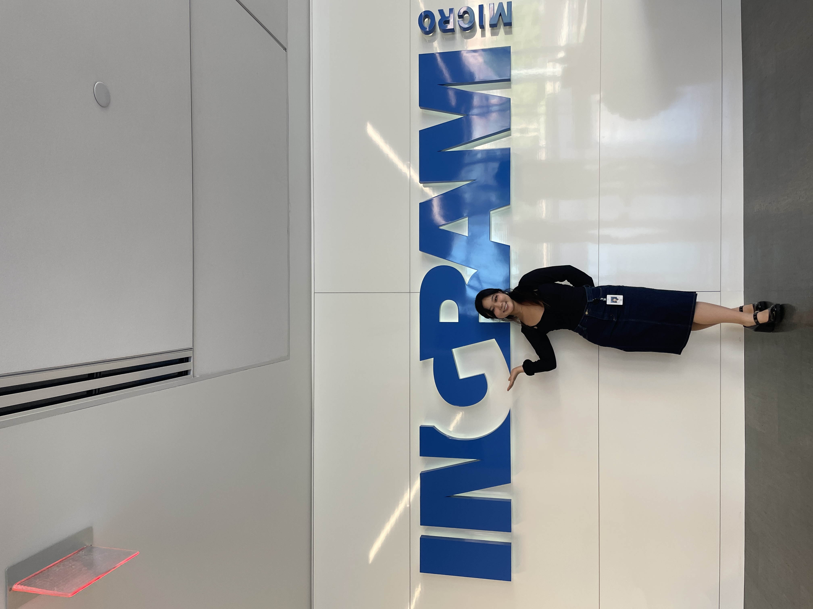
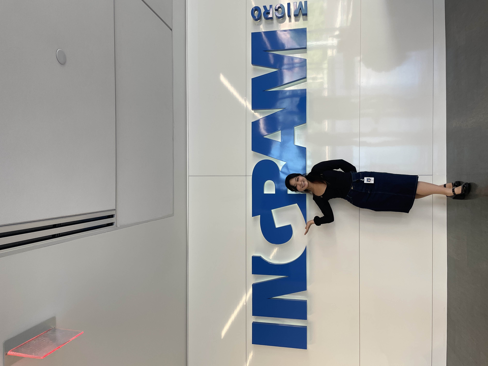

experience
At UCI, I spent time getting involved in spaces where I was able to
explore my interests socially and professionally. I joined
Women in Computer Science, Hack at UCI, Product at UCI, and
Korean American Student Association
where I met life long mentors, alumni, and friends that I would be
able to look up to and work alongside to create a community at UCI
that I would want others to experience.
This upcoming year, I am
Co-President of UCI's Korean American Student Association and
Vice President of Finance at Product at UCI, and I have spent time in Corporate and Outreach committees in
Hack at UCI and Women in Computer Science.
Since the start of college, I have been working at
WhizKidz as a Computer Science Instructor.
I've always had an interest in teaching and take the approach of
asking, listening, being flexible in their needs as a student, and
being an understanding and empathetic instructor.
Starting off as an intern in the Summer of 2022, I worked
at
Ingram Micro for 1 year and 3 months as a Project Manager
Analyst.
During this time, I enjoyed and spearheaded the internship's Digital
Transformation Documentation Project where I led a team of 10
interns to interview, document, and present to Ingram's Executive
Team our findings within a 3 week span!
Since June 2023, I've worked with Noveil Inc., a dating app start-up, where I work as
a Software Engineering Intern
and lead frontend development using Swift. I ideate, test, and develop features that would create
the best user experience within our application that starts with video call icebreakers before matches.
 
